홈 › 아이템 박스
아이템 박스
번호와 칸의 모양은 덱 전체에서 한 가지로 맞춰요. 같은 덱 안에서 섞지 않아요. 그림은 위에서 고른 색을 따라가요.
번호 모양
1
기본
목록 · 목차 번호는 네모, 단계 · 시간축 번호는 동그라미예요. 따로 고르지 않으면 이 모양이에요.

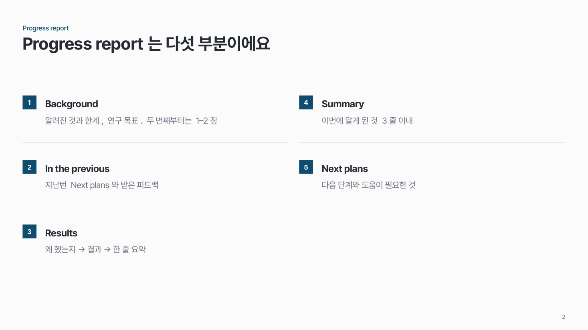

2
동그라미
덱 안의 번호를 모두 동그라미로. 단계 · 시간축이 많은 덱에 잘 어울려요.
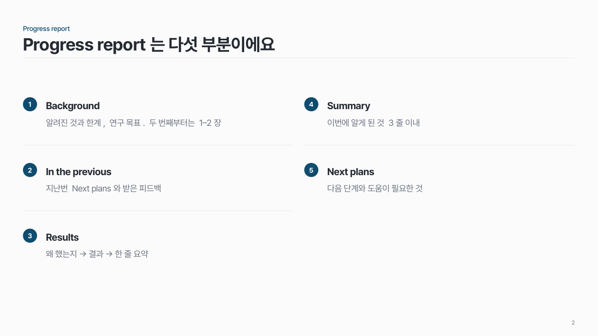
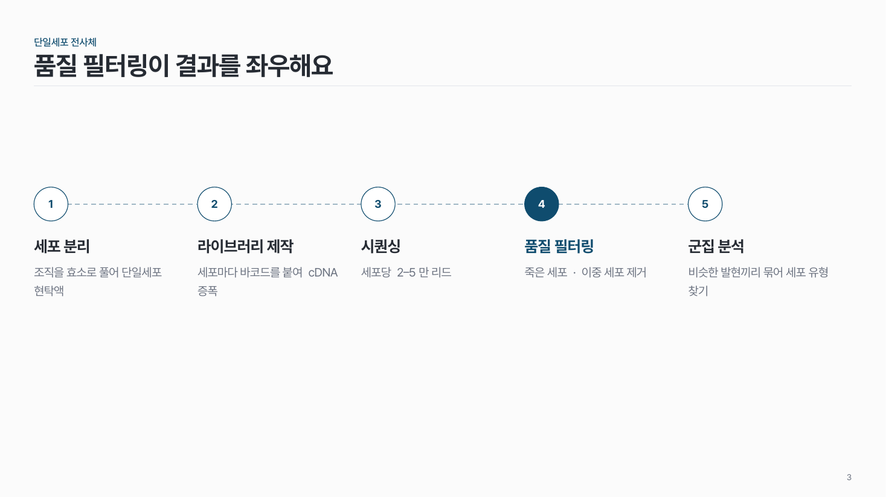

3
네모
덱 안의 번호를 모두 네모로. 목록 · 표가 많은 덱에 잘 어울려요.
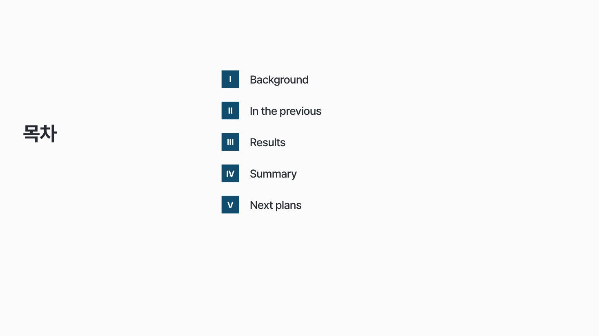

4
둥근 네모
네모보다 부드럽게. 모서리는 작게만 둥글려요.
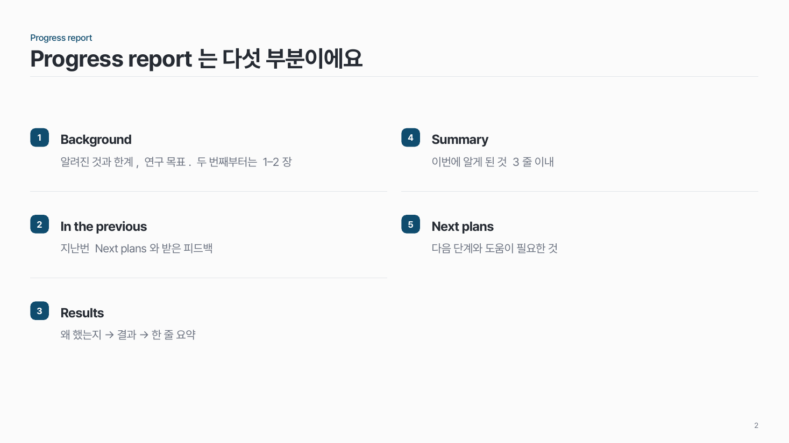
칸 모양
1
선
흰 칸 + 옅은 0.75pt 선. 기본이에요.

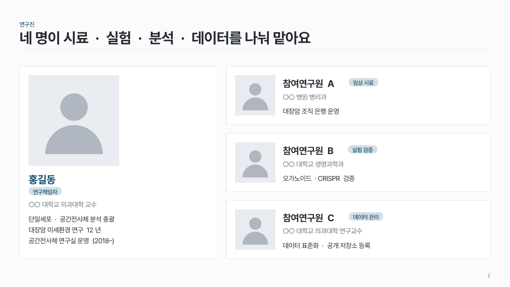
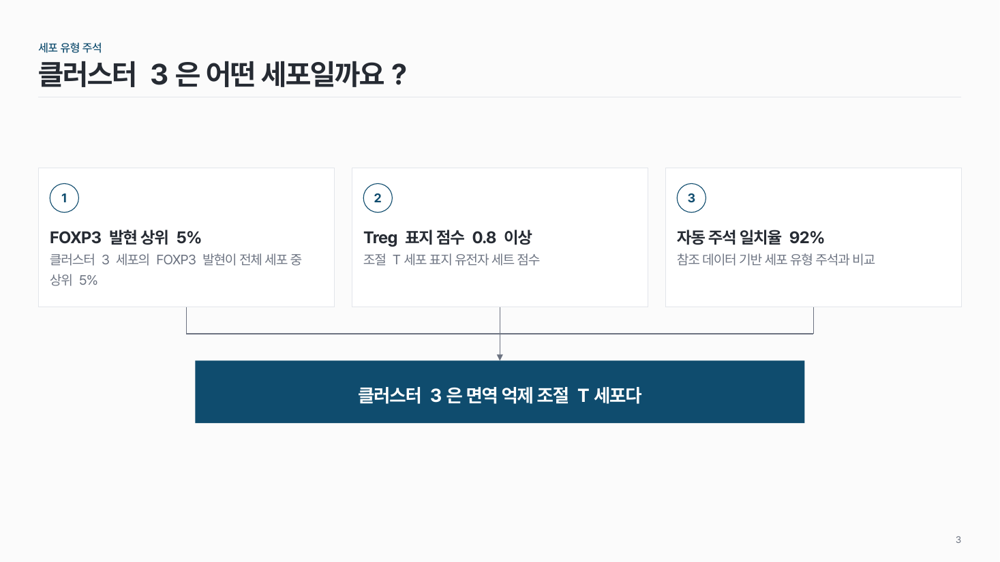

2
옅은 그림자
선 대신 아주 옅고 넓게 퍼지는 그림자 고치면 퀄리티 2배 자주 쓰는 서식
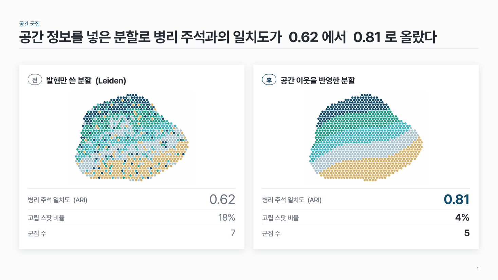
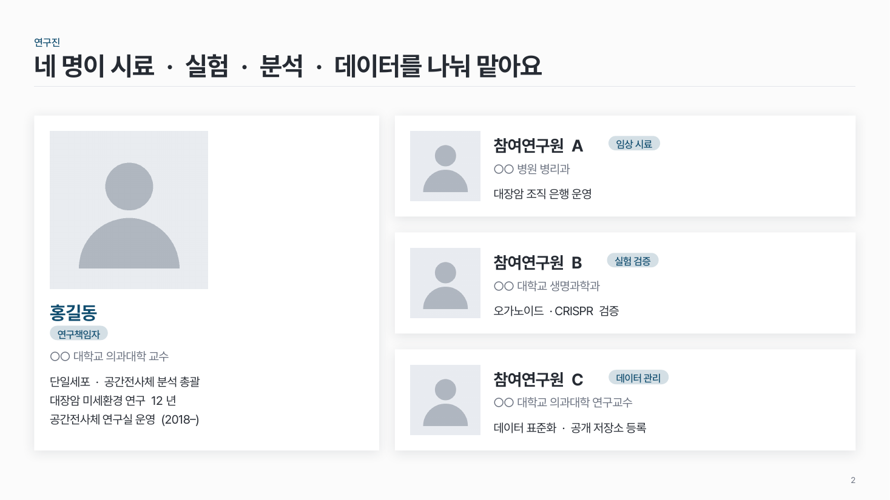
3
옅은 회색 면
선 없이 옅은 회색으로 채워요. 흰 배경 그림이 든 칸에는 피해요 (그림이 흰 네모로 떠 보여요).
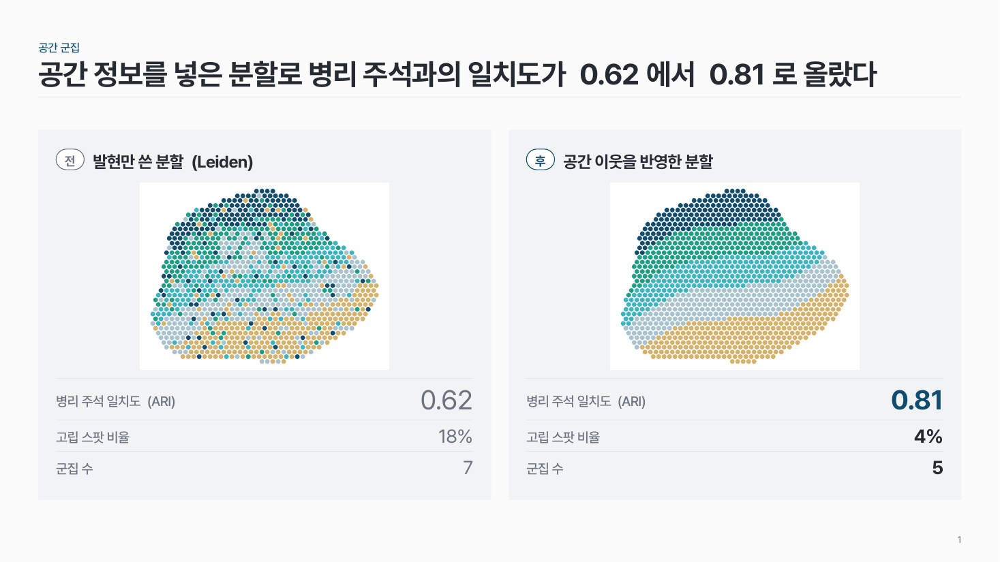
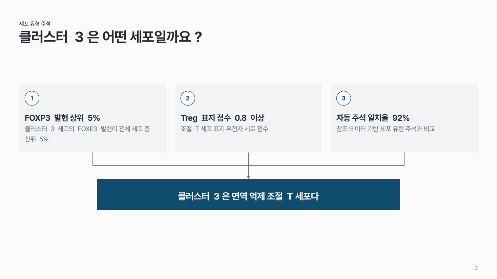
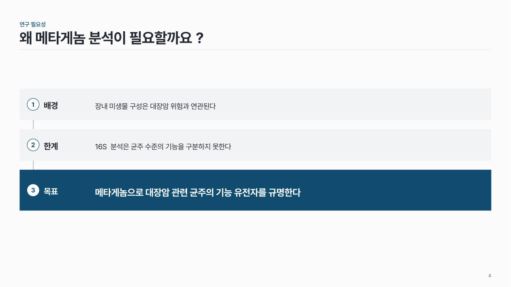
PowerPoint에서
- 번호 모양 바꾸기: 번호 도형을 모두 고른 뒤 도형 서식 › 도형 편집 › 도형 모양 변경
- 옅은 그림자 값: 바깥쪽 그림자, 색 짙은 회색, 투명도 89%, 흐리게 14pt, 간격 2pt, 각도 90°
- 옅은 회색 면 값: RGB 242, 243, 245, 선 없음
- 진한 강조 칸은 어느 모양이든 그대로 둬요
하지 말 것
- 한 덱 안에서 번호 모양이나 칸 모양 섞기
- 진한 그림자, 글로우, 크게 둥근 카드
- 뉴모피즘 · 글래스모피즘: 프로젝터에서 대비가 낮고, PowerPoint 도형으로는 유리처럼 흐린 효과를 제대로 만들 수 없어요